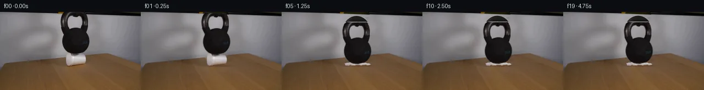

![首帧]()

Round 00
2026-11-05T19:55:03.724033+00:00像素候选变化代码 +220/−0inspection 更新
pixels 4b8d6cb5cbbe8177 · code 61c4641689a0cb5e
查看本轮 generate.py 真实 diff
--- previous/generate.py
+++ current/generate.py
@@ -0,0 +1,220 @@
+"""Image-layer continuation: local background reconstruction and foam deformation."""
+from pathlib import Path
+import json
+import numpy as np
+from PIL import Image, ImageDraw, ImageFilter
+import cv2
+from scipy.ndimage import binary_dilation, binary_erosion
+from scipy.sparse import lil_matrix
+from scipy.sparse.linalg import spsolve
+from artifact_io import save
+
+ROOT = Path(__file__).resolve().parent
+S = 4
+W, H = 256, 144
+PAD = 14
+original = np.array(Image.open(ROOT / 'first_frame.png').convert('RGB'))
+
+# Source coordinates include the small clipped part of the top of the handle.
+outer = [(117,0),(114,4),(112,9),(110.6,16),(110.7,23),
+ (112,30),(114.7,36),(116.7,40),(114.7,45),(113.2,51),
+ (113.0,57),(113.8,62),(115.8,67),(119.3,71.8),
+ (123.8,74.8),(129.9,77),(138.5,77.7),(147.2,75.8),
+ (153.5,72.5),(158.2,67.8),(161.2,62),(162.6,55),
+ (162,47),(159.8,41.8),(156.2,37.9),(158.8,30),
+ (160.2,23),(160.1,15),(159,8),(156.8,2),(155.3,0)]
+hole = [(128,7.5),(132,6.4),(134.5,8.6),(138,9),(141,6.5),
+ (145,8),(148,12),(149.7,17),(149.5,23),(147.7,28.8),
+ (146,30.3),(141,29.1),(136,29),(130,30.6),(126,32),
+ (123.8,26),(123,19),(124,12),(126,9)]
+cup_boundary = [(123,75),(130,75.5),(135,77.5),(150,78),
+ (154,79.5),(156,83),(156.5,91),(155,95.5),
+ (149,97),(135,98),(128,99.7),(124,99.4),
+ (121,97),(119.9,92),(119.8,85),(121,79)]
+
+def polygon_mask(points, padded=False):
+ h = H + PAD if padded else H
+ off = PAD if padded else 0
+ m = Image.new('L', (W*S, h*S))
+ ImageDraw.Draw(m).polygon([(round(x*S),round((y+off)*S)) for x,y in points], fill=255)
+ return np.array(m, dtype=np.float32) / 255
+
+bell_mask = polygon_mask(outer)
+bell_mask *= 1-polygon_mask(hole)
+cup_mask = polygon_mask(cup_boundary)
+small_bell = np.array(Image.fromarray((bell_mask*255).astype('uint8')).resize((W,H),Image.Resampling.LANCZOS)) > 20
+small_cup = np.array(Image.fromarray((cup_mask*255).astype('uint8')).resize((W,H),Image.Resampling.LANCZOS)) > 20
+
+# Fill source cup and old contact shadow with neighboring tabletop pixels.
+remove = binary_dilation(small_bell | small_cup, iterations=2)
+remove[95:104,117:166] = True
+background = cv2.inpaint(original, remove.astype('uint8')*255, 5, cv2.INPAINT_TELEA).astype(float)
+
+# A harmonic wall fill produces smoothly changing illumination without
+# carrying the cup/table colors upward. Top molding is handled separately.
+wall_remove = binary_dilation(small_bell, iterations=2)
+wall_remove[:10] = False
+wall_remove[81:] = False
+indices = np.full((H,W), -1, dtype=int)
+yy,xx = np.where(wall_remove)
+indices[yy,xx] = np.arange(len(yy))
+A = lil_matrix((len(yy),len(yy)), dtype=float)
+b = np.zeros((len(yy),3), dtype=float)
+for k,(y,x) in enumerate(zip(yy,xx)):
+ A[k,k] = 4
+ for ny,nx in [(y-1,x),(y+1,x),(y,x-1),(y,x+1)]:
+ if indices[ny,nx]>=0:
+ A[k,indices[ny,nx]] = -1
+ else:
+ b[k] += background[ny,nx]
+background[yy,xx] = spsolve(A.tocsr(), b)
+# Restore the diagonal edge of the dark top strip from both visible sides.
+for y in range(10):
+ for x in range(108,165):
+ if not remove[y,x]:
+ continue
+ edge = 0.036*x-1.25
+ a = np.clip(edge-y+0.5, 0, 1)
+ light = (1-(x-108)/57)*original[9,108] + ((x-108)/57)*original[9,165]
+ dark = (1-(x-108)/57)*original[0,108] + ((x-108)/57)*original[0,165]
+ # The yellow mark at the upper left belongs to the static background;
+ # do not extrapolate that mark into the newly exposed area.
+ dark = np.minimum(dark, [32,30,26])
+ background[y,x] = a*dark + (1-a)*light
+background = np.clip(background,0,255).astype('uint8')
+Image.fromarray(background).save(ROOT / '.tmp/background.png')
+
+source_hi = np.array(Image.fromarray(original).resize((W*S,H*S), Image.Resampling.BICUBIC), dtype=np.float32)
… diff truncated; 133 more lines …